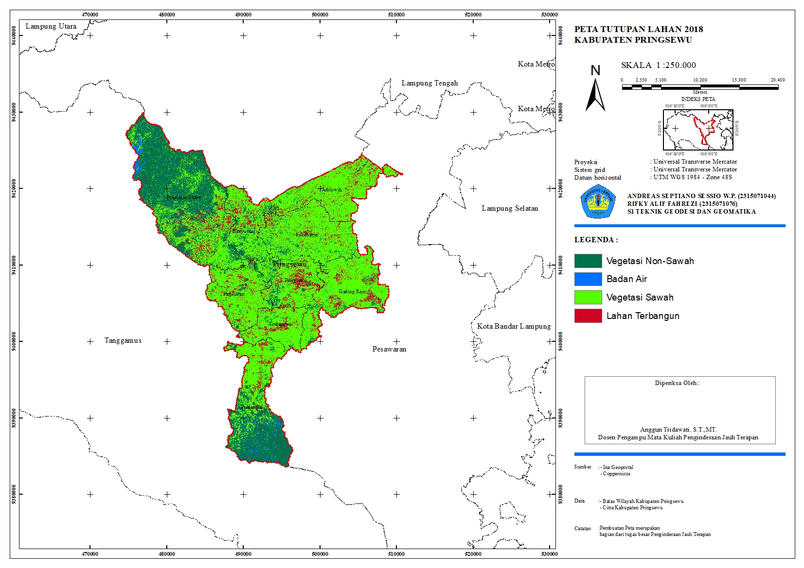
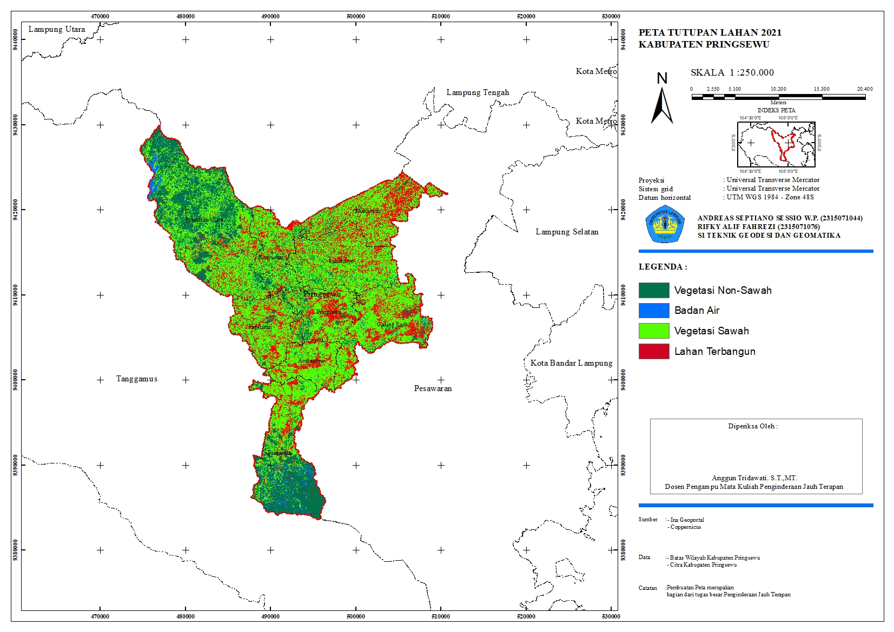

Portofolio


Solusi Pemetaan Profesional untuk KKN, Skripsi, Penelitian, UAV, GIS dan Analisis Spasial di Indonesia.
Konsultasi GratisBatas wilayah, jalan, sungai dan fasilitas umum.
Pertanian, UMKM, wisata dan perikanan.
Sekolah, puskesmas, tempat ibadah dan kantor desa.
Sawah, kebun, permukiman dan hutan.
Static, Rapid Static, dan Post Processing.
Kontur,Long/Cross Section, Perencanaan Rute/Jalan.
Siap masuk laporan, skripsi maupun publikasi.
1 Peta Tematik
3 Peta Tematik
5 Peta + Revisi


Memahami standar pemetaan akademik dan penelitian.
Siap dimasukkan ke laporan KKN, skripsi, dan jurnal.
Melayani revisi dan konsultasi hingga peta siap digunakan.